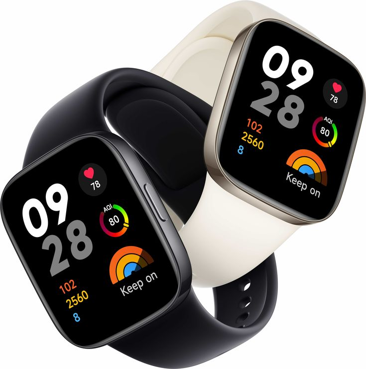
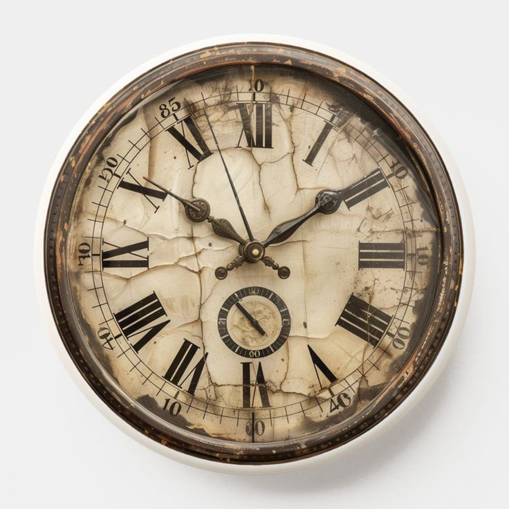
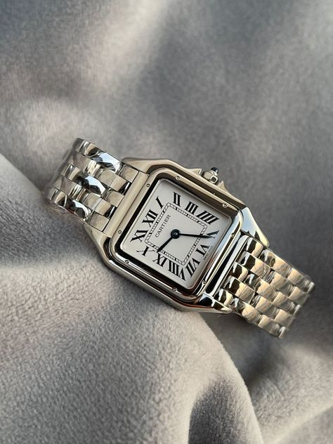
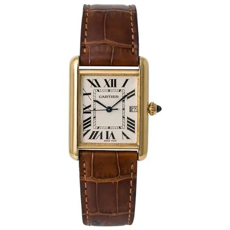
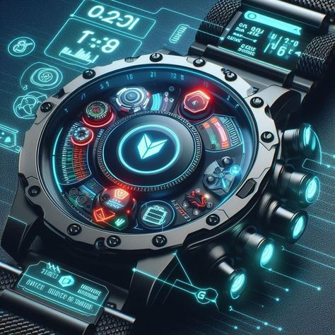

Smartwatches:The rising gadget
Learn how smartwatches are the rising gadget in today's world.....
Read More
The watch industry has been rapidly growing ever since it was discovered. It has always been about precision,designs,skills and manymore. As the rise of new technology,watches are evolving in exciting ways.
Industries are using technology to improve quality,connect with customers,and create new types of watches.
As the technology continues to advance, we can expect more innovations in watch designs, functionality and how they are brought and sold.
These technological innvotaions not only impact on the designs and innvotaions but also the way consumer reacts on how they are marketed and showed.

Learn how smartwatches are the rising gadget in today's world.....
Read More
See how technology can drive through the designs and make them more classy, creative and innovative......
Read More
what makes a luxury watch worth the investment? We dive into materials, history, craftsmanship...
Read More
Discover the rich textures and refined design of watches with high-quality leather straps....
Read MoreSee how digital marketing makes a vast difference in watch world.....
Read More
In this technological world the era where everything needs..............
Read More